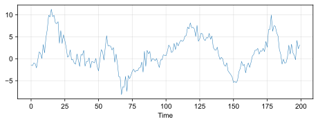
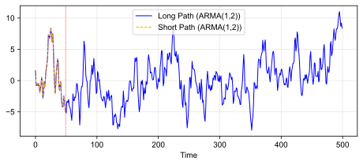
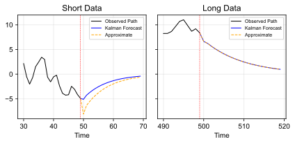

Questions?
\[ y_t = \mu + \phi_1 y_{t-1} + \dots + \phi_p y_{t-p} + \varepsilon_t + \theta_1 \varepsilon_{t-1} + \dots + \theta_q \varepsilon_{t-q} \]
\[ \phi(L)\, y_t = \mu + \theta(L)\, \varepsilon_t \]
where \(\phi(L) = 1 - \phi_1 L - \dots - \phi_p L^p\) and \(\theta(L) = 1 + \theta_1 L + \dots + \theta_q L^q\)
\[ y_t = \frac{\mu}{1 - \phi_1 - \dots - \phi_p} + \underbrace{\phi(L)^{-1}\theta(L)}_{\equiv\, \psi(L)}\, \varepsilon_t \]
Takeaway
Stationarity depends only on the roots of \(\phi(L)\), never on the roots of \(\theta(L)\)
\[ \gamma_h = \phi_1 \gamma_{h-1} + \dots + \phi_p \gamma_{h-p}, \qquad h > q \]
Takeaway
After lag \(q\) the decay is fast and exponential. The MA part never creates trouble for stationarity
\[ y_t = 0.9\, y_{t-1} + \varepsilon_t - 0.8\, \varepsilon_{t-1} + 0.6\, \varepsilon_{t-2} + 0.4\, \varepsilon_{t-3} + 0.8\, \varepsilon_{t-4}, \qquad \varepsilon_t \iid N(0,1) \]

Same MA part, \(\theta = (-0.8, 0.6, 0.4, 0.8)\), and the same shocks: only \(\phi_1\) changes. \(T = 200\)
acfShocks = {
const draw = d3.randomNormal.source(d3.randomLcg(2026))(0, 1)
return Float64Array.from({length: 404}, draw)
}
acfTheta = [1, -0.8, 0.6, 0.4, 0.8]
acfQ = 4
// y_t = phi y_{t-1} + sum_i theta_i e_{t-i}, started at 0
acfPath = {
const y = []
let prev = 0
for (let t = 4; t < acfShocks.length; t++) {
prev = acfPhi * prev + d3.sum(acfTheta, (c, i) => c * acfShocks[t - i])
y.push(prev)
}
return y.slice(200)
}
// True ACF from the MA(infinity) weights: psi_j = phi psi_{j-1} + theta_j
acfTrue = {
const psi = [1]
for (let j = 1; j < 600; j++) psi.push(acfPhi * psi[j - 1] + (acfTheta[j] ?? 0))
const g = h => d3.sum(psi.slice(0, psi.length - h), (p, j) => p * psi[j + h])
return d3.range(1, 21).map(h => ({h, rho: g(h) / g(0)}))
}
// Sample ACF: (1/T) sum (y_t - ybar)(y_{t-h} - ybar), divided by the sample variance
acfSample = {
const T = acfPath.length, m = d3.mean(acfPath)
const c = h => d3.sum(d3.range(h, T), t => (acfPath[t] - m) * (acfPath[t - h] - m)) / T
return d3.range(1, 21).map(h => ({h, rho: c(h) / c(0)}))
}
acfPanel = (title, plot) => html`<div>
<div style="text-align: center">${title}</div>
${plot}
</div>`
html`<div style="display: flex; gap: 20px; justify-content: center; font-size: 19px">
${acfPanel("One path", Plot.plot({
width: 560, height: 400, marginLeft: 50, marginBottom: 45,
style: {fontSize: "18px", fontFamily: "Arial, Arimo, sans-serif"},
x: {label: "Periods", labelAnchor: "center", labelArrow: "none"},
y: {label: null, nice: true, ticks: 5},
grid: true,
marks: [
Plot.ruleY([0], {stroke: "black", strokeDasharray: "5,4"}),
Plot.line(acfPath, {x: (d, i) => i + 1, y: d => d, stroke: "#0072BC", strokeWidth: 1.3})
]
}))}
${acfPanel(html`Autocorrelation <i>ρ<sub>h</sub></i>: <span style="color: #0072BC">true</span> vs. <span style="color: #EB811B">sample</span>`, Plot.plot({
width: 620, height: 400, marginLeft: 50, marginBottom: 45,
style: {fontSize: "18px", fontFamily: "Arial, Arimo, sans-serif"},
x: {label: "Lag h", domain: [0.5, 20.5], ticks: d3.range(2, 21, 2), labelAnchor: "center", labelArrow: "none"},
y: {label: null, domain: [-1, 1], ticks: 5},
grid: true,
marks: [
Plot.ruleY([0], {stroke: "black"}),
Plot.ruleX([acfQ + 0.5], {stroke: "#EB811B", strokeWidth: 2, strokeDasharray: "7,5"}),
Plot.ruleX(acfTrue, {x: "h", y1: 0, y2: "rho", stroke: "#0072BC", strokeWidth: 2.5}),
Plot.dot(acfTrue, {x: "h", y: "rho", fill: "#0072BC", r: 5}),
Plot.dot(acfSample, {x: "h", y: "rho", stroke: "#EB811B", symbol: "times", r: 6, strokeWidth: 2.5}),
Plot.text([`after q = ${acfQ}: ρₕ = φ₁ ρₕ₋₁`], {frameAnchor: "top-right", dx: -10, dy: 10, fill: "#EB811B", fontWeight: "bold", fontSize: 20, stroke: "white", strokeWidth: 6})
]
}))}
</div>`\[ y_t = \mu + \phi_1 y_{t-1} + \varepsilon_t + \theta_1 \varepsilon_{t-1}, \qquad |\phi_1| < 1 \]
\[ \Cov(\varepsilon_t, y_t) = \sigma^2, \qquad \Cov(\varepsilon_{t-1}, y_t) = \phi_1 \sigma^2 + \theta_1 \sigma^2 \]
Take covariances of both sides of the model with \(y_t\) and with \(y_{t-1}\): \[ \begin{aligned} \gamma_0 &= \phi_1 \gamma_1 + \Cov(\varepsilon_t, y_t) + \theta_1 \Cov(\varepsilon_{t-1}, y_t) = \phi_1 \gamma_1 + \sigma^2 + \theta_1 (\phi_1 + \theta_1) \sigma^2 \\ \gamma_1 &= \phi_1 \gamma_0 + \Cov(\varepsilon_t, y_{t-1}) + \theta_1 \Cov(\varepsilon_{t-1}, y_{t-1}) = \phi_1 \gamma_0 + \theta_1 \sigma^2 \end{aligned} \]
Plug the second equation into the first and solve the linear system: \[ \begin{aligned} \gamma_0 &= \frac{1 + \theta_1^2 + 2 \theta_1 \phi_1}{1 - \phi_1^2}\, \sigma^2 \\ \gamma_1 &= \frac{(1 + \theta_1 \phi_1)(\phi_1 + \theta_1)}{1 - \phi_1^2}\, \sigma^2 \\ \gamma_h &= \phi_1^{h-1} \gamma_1, \qquad h \geq 2 \end{aligned} \]
\[ \phi(L) = (1 - r_1 L)(1 - r_2 L) \cdots (1 - r_p L), \qquad \theta(L) = (1 + s_1 L)(1 + s_2 L) \cdots (1 + s_q L) \]
\(y_t = \phi\, y_{t-1} + \varepsilon_t + \theta\, \varepsilon_{t-1}\), same shocks throughout. Try \(\theta = -\phi\)
// The button lives inside the form template, so it sets the very theta input
// on the slide; the input event bubbles up and updates the form's value.
viewof cancel = Inputs.form(
[
Inputs.range([-0.95, 0.95], {value: 0.8, step: 0.05, label: "φ", width: 400}),
Inputs.range([-0.95, 0.95], {value: 0.4, step: 0.05, label: "θ", width: 400})
],
{template: inputs => {
inputs.forEach(f => f.style.setProperty("--label-width", "40px"))
const button = html`<button type="button" style="font: 19px Arial, Arimo, sans-serif; padding: 4px 14px; cursor: pointer">Set θ = −φ</button>`
button.onclick = () => {
inputs[1].value = -inputs[0].value
inputs[1].dispatchEvent(new Event("input", {bubbles: true}))
}
return html`<div style="display: flex; gap: 40px; justify-content: center; align-items: center">${inputs}${button}</div>`
}}
)cancelPhi = cancel[0]
cancelTheta = cancel[1]
cancelShocks = {
const draw = d3.randomNormal.source(d3.randomLcg(1938))(0, 1)
return Float64Array.from({length: 301}, draw)
}
// Treat theta = -phi up to slider rounding as an exact cancellation
cancelled = Math.abs(cancelPhi + cancelTheta) < 0.025
// y_t = phi y_{t-1} + e_t + theta e_{t-1}; the first 100 periods are burn-in
cancelPath = {
const y = []
let prev = 0
for (let t = 1; t < cancelShocks.length; t++) {
prev = cancelPhi * prev + cancelShocks[t] + cancelTheta * cancelShocks[t - 1]
y.push(prev)
}
return y.slice(100)
}
// Closed form: rho_1 = (1 + theta phi)(phi + theta) / (1 + theta^2 + 2 theta phi), rho_h = phi^(h-1) rho_1
cancelRho1 = cancelled ? 0 :
(1 + cancelTheta * cancelPhi) * (cancelPhi + cancelTheta) / (1 + cancelTheta ** 2 + 2 * cancelTheta * cancelPhi)
cancelACF = d3.range(0, 13).map(h => ({h, rho: h === 0 ? 1 : cancelRho1 * cancelPhi ** (h - 1)}))
html`<div style="display: flex; gap: 20px; justify-content: center; font-size: 19px">
${acfPanel("One path", Plot.plot({
width: 590, height: 370, marginLeft: 50, marginBottom: 45,
style: {fontSize: "18px", fontFamily: "Arial, Arimo, sans-serif"},
x: {label: "Periods", labelAnchor: "center", labelArrow: "none"},
y: {label: null, domain: [-8, 8], ticks: 5},
grid: true,
marks: [
Plot.ruleY([0], {stroke: "black", strokeDasharray: "5,4"}),
Plot.line(cancelPath, {x: (d, i) => i + 1, y: d => d, stroke: "#0072BC", strokeWidth: 1.3, clip: true})
]
}))}
${acfPanel(html`Autocorrelation <i>ρ<sub>h</sub></i>, <i>ρ</i><sub>1</sub> = ${cancelRho1.toFixed(2)}`, Plot.plot({
width: 590, height: 370, marginLeft: 50, marginBottom: 45,
style: {fontSize: "18px", fontFamily: "Arial, Arimo, sans-serif"},
x: {label: "Lag h", domain: [-0.5, 12.5], ticks: d3.range(0, 13, 2), labelAnchor: "center", labelArrow: "none"},
y: {label: null, domain: [-1, 1], ticks: 5},
grid: true,
marks: [
Plot.ruleY([0], {stroke: "black"}),
Plot.ruleX(cancelACF, {x: "h", y1: 0, y2: "rho", stroke: "#0072BC", strokeWidth: 2.5}),
Plot.dot(cancelACF, {x: "h", y: "rho", fill: "#0072BC", r: 5}),
cancelled ? Plot.text(["θ = −φ: white noise!"], {frameAnchor: "top-right", dx: -10, dy: 10, fill: "#EB811B", fontWeight: "bold", fontSize: 20, stroke: "white", strokeWidth: 6}) : null
]
}))}
</div>`Questions?
\[ y_t - \mu = \psi(L)\, \varepsilon_t = \sum_{i=0}^{\infty} \psi_i \varepsilon_{t-i}, \qquad \psi_0 = 1, \quad \sum_{i=0}^{\infty} |\psi_i| < \infty \]
\[ y_{t+s} - \mu = \underbrace{\varepsilon_{t+s} + \psi_1 \varepsilon_{t+s-1} + \dots + \psi_{s-1} \varepsilon_{t+1}}_{\text{future: mean zero}} + \underbrace{\psi_s \varepsilon_t + \psi_{s+1} \varepsilon_{t-1} + \dots}_{\text{known at } t} \]
\[ \E[y_{t+s} \mid \varepsilon_t, \varepsilon_{t-1}, \dots] = \mu + \sum_{i=s}^{\infty} \psi_i \varepsilon_{t+s-i} \]
\[ \frac{\psi(L)}{L^s} = L^{-s} + \psi_1 L^{1-s} + \dots + \psi_{s-1} L^{-1} + \psi_s + \psi_{s+1} L + \psi_{s+2} L^2 + \dots \]
\[ \left[\frac{\psi(L)}{L^s}\right]_+ \equiv \psi_s + \psi_{s+1} L + \psi_{s+2} L^2 + \dots \]
\[ \E[y_{t+s} \mid \varepsilon_t, \varepsilon_{t-1}, \dots] = \mu + \left[\frac{\psi(L)}{L^s}\right]_+ \varepsilon_t \]
\[ \theta(L)^{-1} \phi(L)\, (y_t - \mu) = \varepsilon_t \implies \varepsilon_t = \eta(L)\, (y_t - \mu) \]
where \(\eta(L) \equiv \theta(L)^{-1} \phi(L) = \psi(L)^{-1} = \eta_0 + \eta_1 L + \eta_2 L^2 + \dots\)
Wiener–Kolmogorov Prediction Formula
If \(y_t\) is a stationary and invertible ARMA\((p,q)\), i.e., the roots of both \(\phi(L)\) and \(\theta(L)\) lie outside the unit circle, then \[ \E[y_{t+s} \mid y_t, y_{t-1}, \dots] = \mu + \left[\frac{\psi(L)}{L^s}\right]_+ \eta(L)\, (y_t - \mu) \]
\[ \left[\frac{\psi(L)}{L^s}\right]_+ = \phi^s + \phi^{s+1} L + \phi^{s+2} L^2 + \dots = \phi^s \left(1 + \phi L + \phi^2 L^2 + \dots\right) = \frac{\phi^s}{1 - \phi L} \]
\[ \E[y_{t+s} \mid y_t, y_{t-1}, \dots] = \mu + \phi^s\, (y_t - \mu) \]
\[ \left[\frac{\psi(L)}{L^s}\right]_+ = \theta_s + \theta_{s+1} L + \dots + \theta_q L^{q-s} \]
\[ \E[y_{t+s} \mid y_t, y_{t-1}, \dots] = \mu + \frac{\theta_s + \theta_{s+1} L + \dots + \theta_q L^{q-s}}{\theta(L)}\, (y_t - \mu) \]
Questions?
\[ y_t - \mu = \phi_1 (y_{t-1} - \mu) + \dots + \phi_p (y_{t-p} - \mu) + \varepsilon_t + \theta_1 \varepsilon_{t-1} + \dots + \theta_q \varepsilon_{t-q} \]
With the presample convention (\(y_s - \mu = 0\) and \(\hat\varepsilon_s = 0\) for \(s \leq 0\)), recursively for \(t = 1, \dots, T\): \[ \hat\varepsilon_t = (y_t - \mu) - \sum_{i=1}^{p} \phi_i (y_{t-i} - \mu) - \sum_{j=1}^{q} \theta_j \hat\varepsilon_{t-j} \]
The first few steps: \[ \begin{aligned} \hat\varepsilon_1 &= y_1 - \mu \\ \hat\varepsilon_2 &= (y_2 - \mu) - \phi_1 (y_1 - \mu) - \theta_1 \hat\varepsilon_1 \\ \hat\varepsilon_3 &= (y_3 - \mu) - \phi_1 (y_2 - \mu) - \phi_2 (y_1 - \mu) - \theta_1 \hat\varepsilon_2 - \theta_2 \hat\varepsilon_1 \end{aligned} \]
From here on, just iterate forward (Hamilton (1994), Equation 4.2.25): \[ \hat y_{T+h|T} - \mu = \sum_{i=1}^{p} \phi_i \left(\hat y_{T+h-i|T} - \mu\right) + \sum_{j=h}^{q} \theta_j \hat\varepsilon_{T+h-j} \]
\(y_t = 0.9\, y_{t-1} + \varepsilon_t + 0.8\, \varepsilon_{t-1} - 0.3\, \varepsilon_{t-2}\): a short sample (\(T = 50\)) inside a long one (\(T = 500\))


\(y_t - 2 = \phi\, (y_{t-1} - 2) + \varepsilon_t + 0.8\, \varepsilon_{t-1} - 0.3\, \varepsilon_{t-2}\). Bands: \(\pm 2\) s.d. of the forecast error
viewof fc = Inputs.form(
[
Inputs.range([0, 0.95], {value: 0.9, step: 0.05, label: "φ", width: 400}),
Inputs.range([20, 120], {value: 80, step: 1, label: "Origin T", width: 400})
],
{template: inputs => {
inputs.forEach(f => f.style.setProperty("--label-width", "90px"))
return html`<div style="display: grid; grid-template-columns: auto auto; justify-content: center; column-gap: 60px">${inputs}</div>`
}}
)fcMu = 2
fcTheta = [0.8, -0.3]
fcH = 24
fcN = 150
// Fixed shocks; the first 200 periods are burn-in
fcShocks = {
const draw = d3.randomNormal.source(d3.randomLcg(4225))(0, 1)
return Float64Array.from({length: fcN + 202}, draw)
}
// Simulated path y_1, ..., y_150 and the shocks that produced it
fcSim = {
const [phi] = fc
let prev = 0
const y = [], e = []
for (let t = 2; t < fcShocks.length; t++) {
prev = phi * prev + fcShocks[t] + fcTheta[0] * fcShocks[t - 1] + fcTheta[1] * fcShocks[t - 2]
if (t >= 202) { y.push(fcMu + prev); e.push(fcShocks[t]) }
}
return {y, e}
}
// Forecast from origin T with the true shocks (infinite-data forecast), h = 1..24.
// The MA terms only matter for h <= q = 2; the variance uses the psi weights.
fcPath = {
const [phi, T] = fc
const {y, e} = fcSim
const psi = [1, phi + fcTheta[0]]
psi.push(phi * psi[1] + fcTheta[1])
for (let j = 3; j < fcH; j++) psi.push(phi * psi[j - 1])
const out = [{t: T, f: y[T - 1], sd: 0}]
let prev = y[T - 1] - fcMu, v = 0
for (let h = 1; h <= fcH; h++) {
let f = phi * prev
if (h === 1) f += fcTheta[0] * e[T - 1] + fcTheta[1] * e[T - 2]
if (h === 2) f += fcTheta[1] * e[T - 1]
v += psi[h - 1] ** 2
out.push({t: T + h, f: fcMu + f, sd: Math.sqrt(v)})
prev = f
}
return out
}
// The y-axis follows the data, so a persistent phi never clips the path
fcDomain = {
const lo = Math.min(d3.min(fcSim.y), d3.min(fcPath, d => d.f - 2 * d.sd))
const hi = Math.max(d3.max(fcSim.y), d3.max(fcPath, d => d.f + 2 * d.sd))
return [Math.floor(lo) - 1, Math.ceil(hi) + 1]
}
html`<div style="text-align: center; font-size: 19px">
<span style="color: #0072BC">observed</span>, <span style="color: #EB811B">forecast</span>, <span style="color: #999">realized future</span>
</div>`Plot.plot({
width: 1150, height: 390, marginLeft: 50, marginBottom: 45,
style: {fontSize: "18px", fontFamily: "Arial, Arimo, sans-serif"},
x: {label: "Periods", domain: [1, fcN], labelAnchor: "center", labelArrow: "none"},
y: {label: null, domain: fcDomain, ticks: 6},
grid: true,
marks: [
Plot.areaY(fcPath, {x: "t", y1: d => d.f - 2 * d.sd, y2: d => d.f + 2 * d.sd, fill: "#EB811B", fillOpacity: 0.2, clip: true}),
Plot.ruleY([fcMu], {stroke: "black", strokeDasharray: "5,4"}),
Plot.line(fcSim.y.slice(fc[1] - 1), {x: (d, i) => fc[1] + i, y: d => d, stroke: "#999", strokeWidth: 1.1, clip: true}),
Plot.line(fcSim.y.slice(0, fc[1]), {x: (d, i) => i + 1, y: d => d, stroke: "#0072BC", strokeWidth: 1.4, clip: true}),
Plot.ruleX([fc[1]], {stroke: "#2D3E50", strokeWidth: 1}),
Plot.line(fcPath, {x: "t", y: "f", stroke: "#EB811B", strokeWidth: 3, clip: true})
]
})Questions?
Theorem (Wold’s Decomposition; Hamilton (1994), Section 4.8)
Let \(y_t\) be a zero-mean covariance-stationary process. Let \(\mathcal{P}_{t-m}[y_t]\) be the linear projection of \(y_t\) on \(\{y_{t-m}, y_{t-m-1}, \dots\}\), and let \(e_t \equiv y_t - \mathcal{P}_{t-1}[y_t]\) be the projection error. Then \(y_t\) has a unique representation \[ y_t = \mu_t + \sum_{j=0}^{\infty} \psi_j e_{t-j} \] where \(e_t\) is white noise, \(\psi_0 = 1\), \(\sum_{j=0}^{\infty} \psi_j^2 < \infty\), \(\mu_t \equiv \lim_{m \to \infty} \mathcal{P}_{t-m}[y_t]\) is uncorrelated with \(e_{t-j}\) for all \(j\), and \(\mu_t\) is perfectly predictable from the distant past of \(y_t\)
\[ \frac{\sum_{j>q} 0.95^{2j}}{\sum_{j\geq 0} 0.95^{2j}} = 0.95^{2(q+1)} \leq 0.01 \iff q + 1 \geq \frac{\ln 0.01}{2 \ln 0.95} \approx 44.9 \iff q \geq 44 \]
Questions?
The End